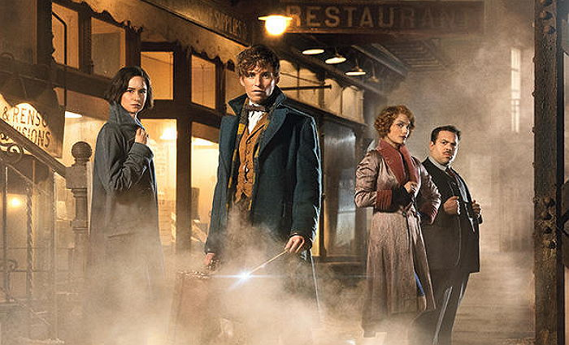
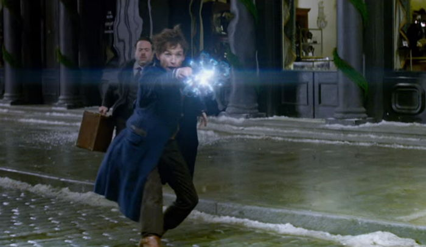

장르 : 판타지, 모험 | 감독 : 데이비드 예이츠 | 각본 : J. K.
롤링 | 출연 : 에디 레드메인, 캐서린 워터스턴 외 | 러닝타임 : 133분


'해리 포터' 마법의 시작! (스토리 클릭해서 미리보기↓↓)
신비한 동물들 탈출, 뉴욕 최대의 위기! 새로운 마법의 시대가 열린다!
1926년 뉴욕, ‘검은 존재’가 거리를 쑥대밭으로 만들고 미국의 마법의회 MACUSA의 대통령과 어둠의 마법사를 체포하는 오러의 수장 그레이브스가 이를 추적하는 혼돈 속에 영국의 마법사 뉴트 스캐맨더가 이 곳을 찾는다. 그의 목적은 세계 곳곳에 숨어있는 신비한 동물들을 찾기 위한 것. 여행을 하면서 다양한 크기의 신비한 동물을 구조해 안에 마법의 공간이 있는 가방에 넣어 다니며 보살핀다. 하지만 은행을 지나던 중 금은보화를 좋아하는 신비한 동물인 니플러가 가방 안에서 탈출을 하고 이 일로 전직 오러였던 티나와 노마지 제이콥과 엮이게 된다. 이 사고로 뉴트와 제이콥의 가방이 바뀌면서 신비한 동물들이 대거 탈출을 하고 그들은 동물들을 찾기 위해 뉴욕 곳곳을 누빈다. 한편, ‘검은 존재’의 횡포는 더욱 거세지는데…